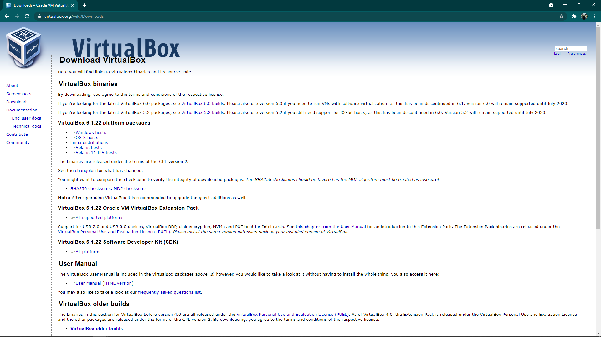
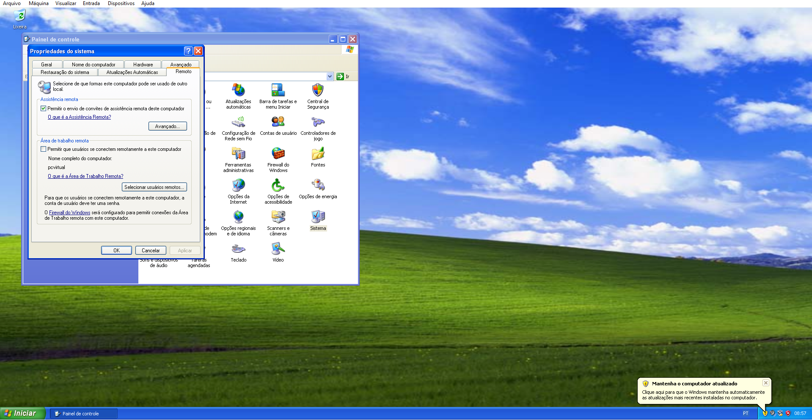
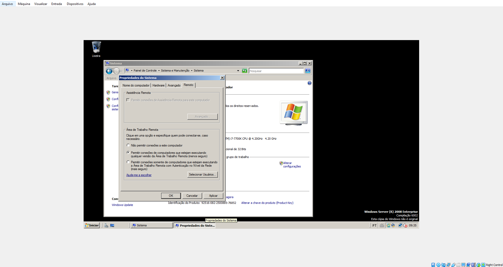
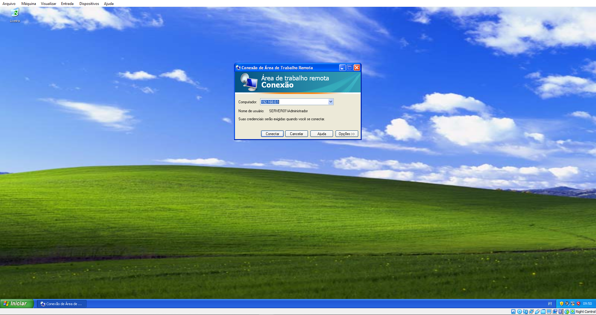

Configuração de Acesso Remoto
Autor: Bernardo Carneiro

Configuração de Acesso Remoto do Windows XP
Iniciar -> Painel de Controle -> Sistema -> Remoto -> Área de trabalho remota -> Permitir que o usuário se conecte remotamente a este computador -> Aplicar
Configuração de Acesso Remoto do Windows 7 Server
Iniciar -> Painel de Controle -> Sistema e manutenção -> Sistema -> Alterar configurações -> Remoto -> Área de trabalho remota ->
Permitir conexões de computadores que estejam executando qualquer versão da área de trabalho remota (menos seguro) -> Aplicar
Teste de Acesso
Iniciar -> Todos os programas -> Acessórios -> Conexão de Área de trabalho de remoto -> Digite o IP da máquina que deseja acessar
Conectar -> Selecione o usuário desejado -> Digite a senha -> Área de trabalho remoto acessada